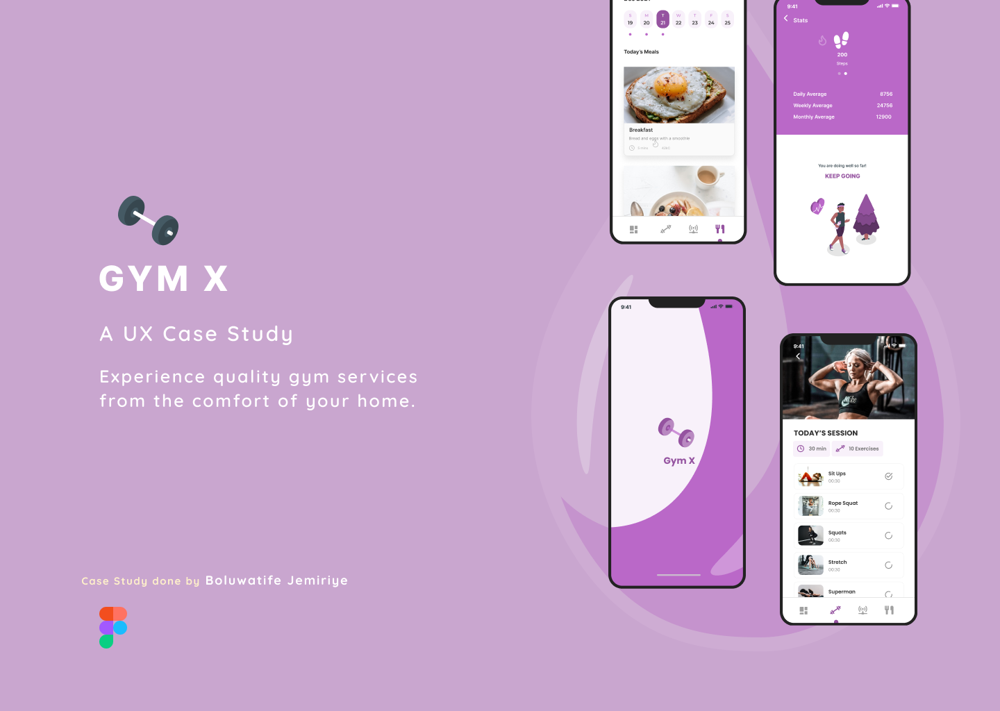
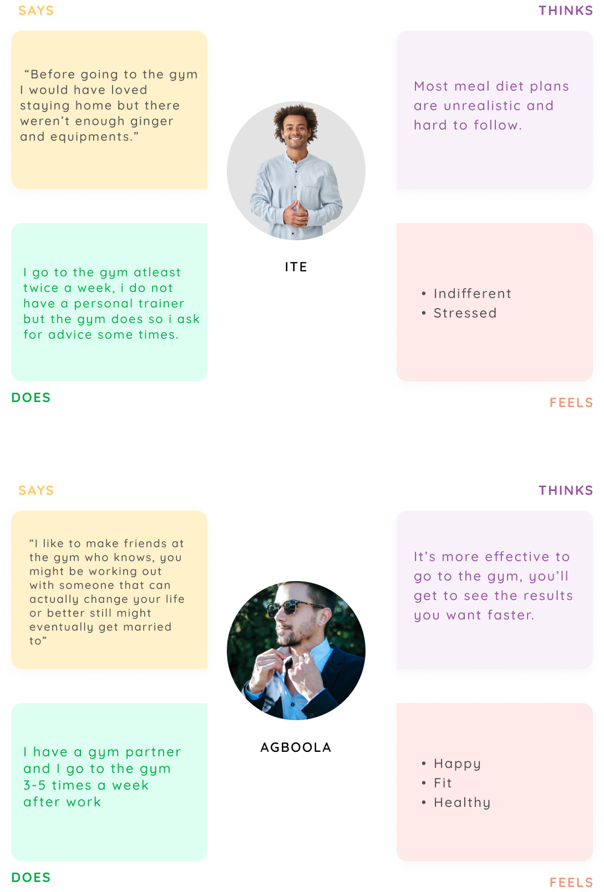
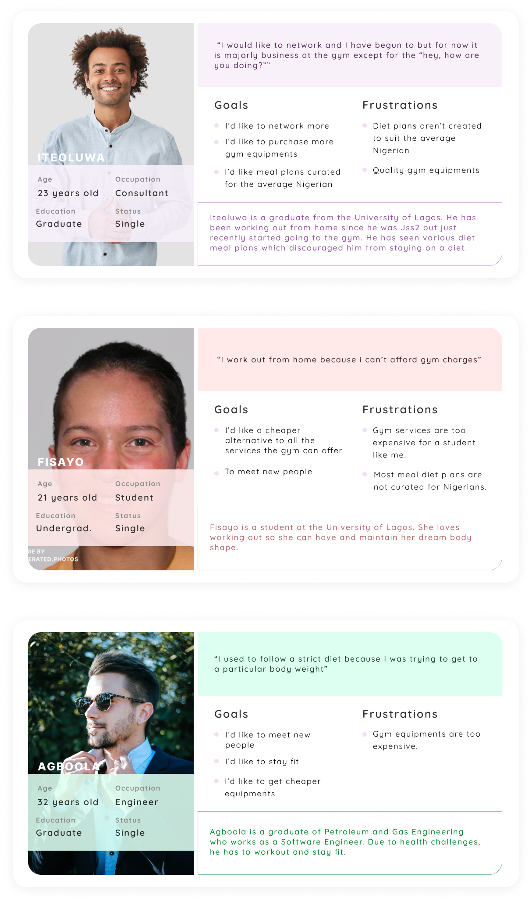
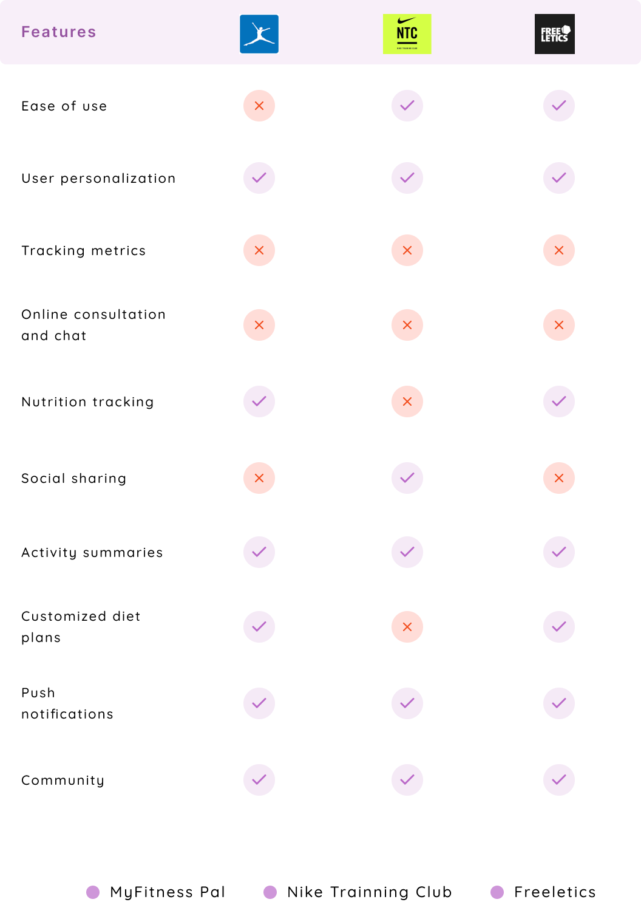
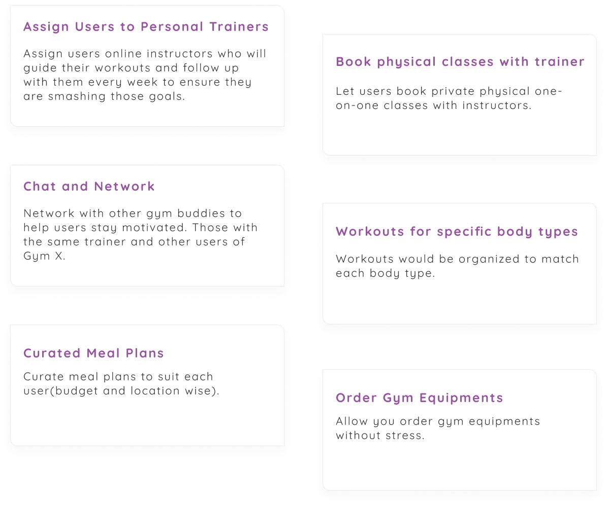
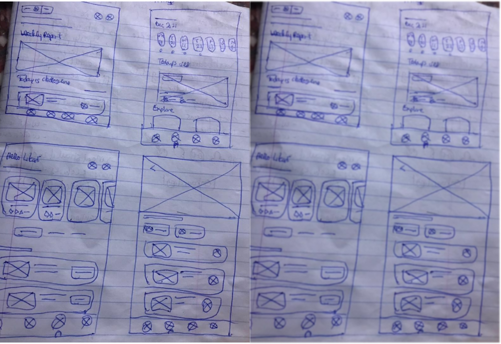
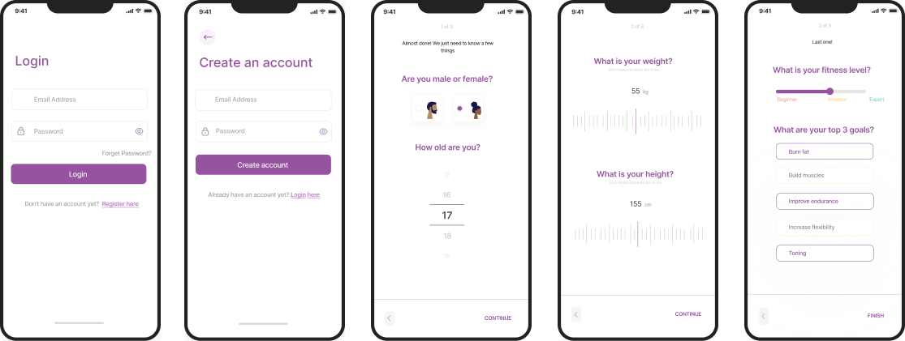
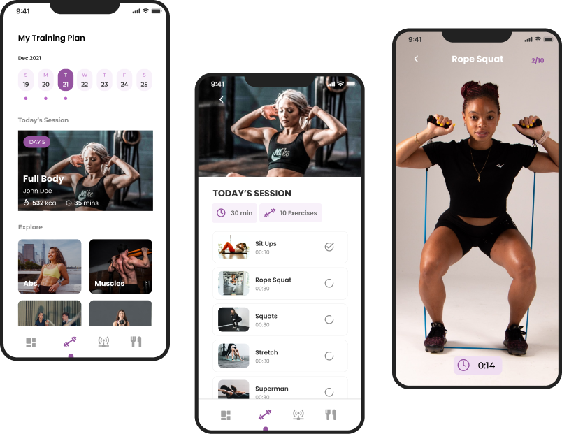

Gym X is a fitness app set to help people achieve their
fitness goals right from the comfort of their homes.
Even if there is a pandemic or the user goes on holiday
they can still follow their fitness schedule and smash their goals.

Timeline
6 weeksRole
Sole DesignerTools Used
FigmaOverview
Goal
What should GymX achieve?
Create an app for a gym to solve user’s pain points.Design flow

Problem
People want to work out from home more
Everyone had to stay at home when COVID-19 struck. The gym junkies, those who just liked the idea of staying fit but were too lazy to do so, in short, everyone.With little to nothing to do, most people had to start home workouts to stay healthy.
I personally like the idea of staying fit and working out from home, so I downloaded various apps to follow a fitness schedule, but it was always difficult for me to stay consistent because I either didn't see the desired difference while using one app or the user experience of the app was simply not encouraging.
So I wondered, how would we cope if we were all forced to stay at home again? Do I have to wait until I return home to work out if I go on vacation? How can working out from home be made to have the same effect as working out in a gym?
All these thoughts made me carry out an interview to find out if this was an actual problem other people faced.
User Research
Primary Research
Qualitative research was carried through one on one interviews. The goal of the interview was to understand the users needs, pain points and fitness goals.Target Market
16-40 year oldsInterview Questions
Key Insights from Interview
Based on the one-on-one interviews I carried out, It was discovered that many people would like to connect at the gym and would also like a relatable diet they can follow to stay fit and healthy.Secondary Research
Based on the secondary research i carried out, it was collated to be that ever since the pandemic, the popularity of health and fitness apps has skyrocketed.More people have opted for home workouts to going to the gym because they believe it is cheaper, straight-forward and easily accessible.
According to eMareketer, the number of fitness app users are estimated at over 84 million by the end of 2022 and according to Technavio, the global fitness market will grow by USD 3.5 billion during 2021-2025.
Also, GlobalNewswire estimated that the fitness app market will touch 14.64 billion (approx.) by the year 2027. which is why there is a need to improve the user experience to ensure that the user’s experience is smooth and useful.
Empathy Map
What do users think?
User Personas
What do they want to be done differently?
Problem Statements
What are the user's pain points?

How Might We Phrases
Competitive Analysis
I analysed direct competitors like MyFitnessPal, Nike Training Club and Freeletics.
Pain Points
What are the user's pain points?
The Solution
How can we solve user's problems?
Information Architecture
App Structure
.png)
Paper Sketches

Low Fidelity Wireframes
.png)
Design System

High Fidelity Wireframes
Final Designs
Splash and Onboarding Screens

Sign Up Screens
Dashboard
.png)
Workouts
Network
.png)
Chat & Get reminders
.png)
Usability Study
Based on the usability study that was carried out amongst 6 target users and all the feedbacks were positive. The following feedbacks were noted.

Takeaways
While working on this project, I learned more about User Centered Design as I interviewed target users, i got to understand and empathize with them then ensured that their noted pain points were at the front of my mind while designing. Both the secondary and primary research helped shape my thinking and influenced my design decision process.